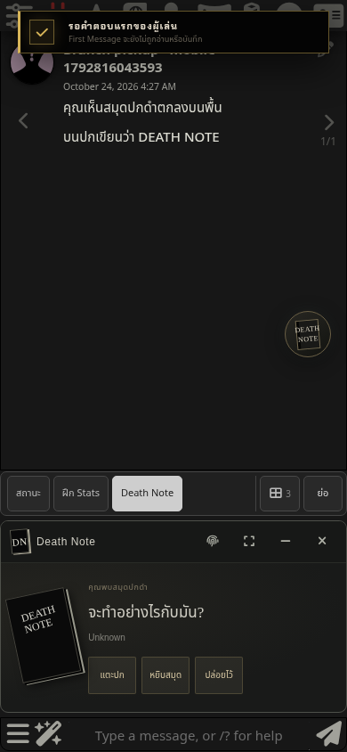
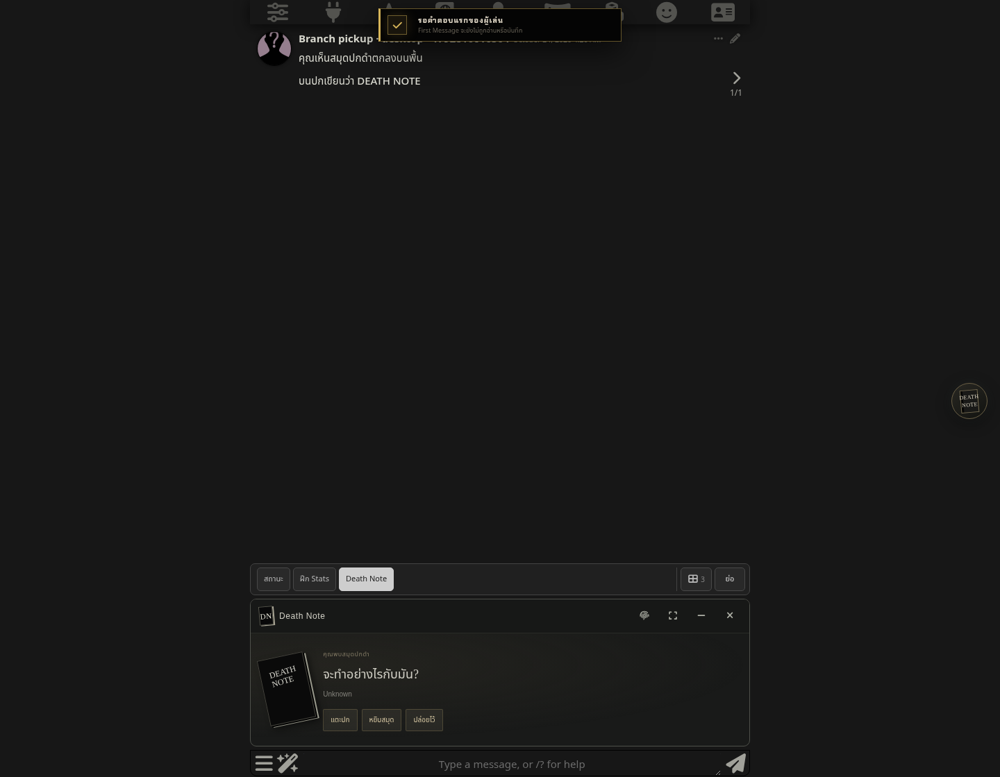

พบสมุดแล้ว
PC · 1440 × 1120
Mobile · 390 × 844 · touch emulation หยิบสำเร็จจากสำนวนใหม่และโรลยาว
Branch ก่อนหยิบ

PC · 1440 × 1120Mobile · 390 × 844 · touch emulationทดสอบ Send / Continue ด้วยคำตอบ controlled SSE ภายในเครื่อง ไม่เรียกโมเดลหรือเสียงภายนอก มือถือเป็น browser emulation ไม่ใช่ iPhone จริง ไฟล์แชทและภาพส่วนตัวไม่รวมในหน้านี้